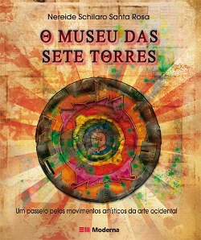
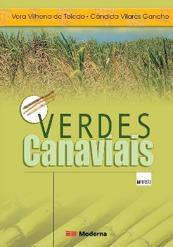
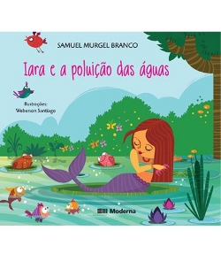
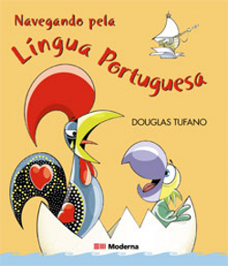

LIVROS
Editora Moderna, a mais conceituada em livros paradidáticos
A Editora Moderna tem como filosofia a atuação centrada no aluno. Os conteúdos procuram trazer informações próximas à realidade dos estudantes. A organização é clara, condição fundamental aos processos de aprendizagem e compreensão. Outra característica das obras da Editora é o projeto gráfico, desenhado para convidar o aluno ao estudo. A qualidade dos conteúdos das obras, que passam por rigorosos processos de análise e revisão, é preocupação constante do Grupo Santillana e da Editora Moderna. São procedimentos conduzidos por equipes próprias, especialistas em cada segmento, pesquisas e colaborações vindas de professores de todo o Brasil, buscando sempre o aperfeiçoamento e a atualização dos livros.
No corpo editorial, a Moderna tem hoje um time de renomados autores, com formação acadêmica específica para cada disciplina. Em suas coleções, a Editora também conta com equipes de especialistas em cada segmento, que são responsáveis pelo desenvolvimento e pela edição das obras, totalmente criadas no Brasil. (fonte: site www.moderna.com.br) São dezenas de obras paradidáticas da Editora Moderna que fazem parte do pacote oferecido com Roteiro ou Oficina na Escola. O Projeto Livros em Ação é realizado em parceria com a conceituada Editora Moderna, que possui mais de 40 anos de compromisso com a educação. As inúmeras obras paradidáticas que são utilizados nos estudos de meio ou oficinas na escola são oferecidas a um baixo custo, tornando um projeto acessível. Visite o site da editora e conheça suas obras: www.moderna.com.br



